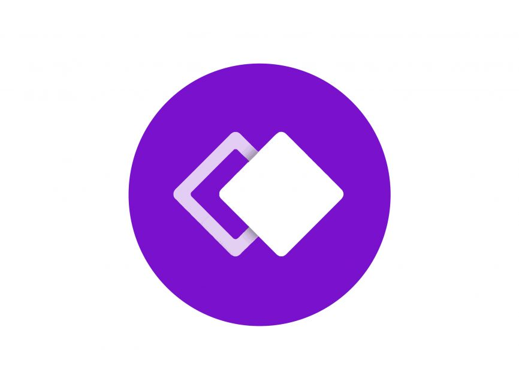

🎓 Compétences mobilisées

Java
Back-end de l'application avec logique métier.

FXML
Création de l'interface graphique.

Whimsical
Wireframes et maquettes UI/UX.
UML
Modélisation des cas d'utilisation et architecture.